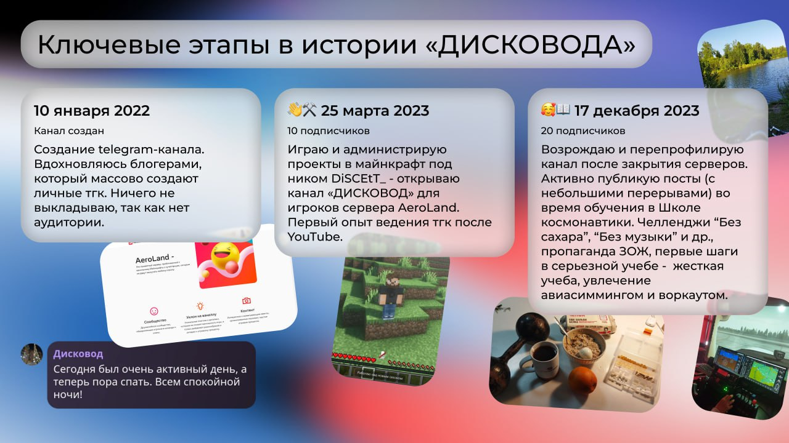

поступление в Сириус
поход к статуе Прометея
Роза Хутор · пешком
первый семестр: итоги
Абхазия за один день
Универсиада-2019
ВНОТ · Финополис
Большие вызовы-2025
нырок в ледяное море
день знаний в лицее
Кутарские водопады
концерт ССМШ
встреча с Дамиром Юсуповым
велосипед студента
неделя без интернета
морская рыбалка у Адлера
Документирую свою жизнь
и путь к успеху
«Бортовой журнал с элементами личного дневника». В это понятие я закладываю глубокий смысл, и чем-то мой журнал действительно может быть похож на бортовой журнал пилота самолёта.
Читать статьи
О блоге

История блога
«Дисководу» больше четырёх лет
А вы знали, что со дня создания
«Дисковод» прошло уже свыше 4 лет? Этот пост — о прошлом, настоящем и будущем канала.
Читать статью
Привет! Я Артём Толстихин (@disccsz). Пишу обо всём, что считаю интересным зафикисировать на страницах моей цифровой книги. Часто развернуто и интересно.
Данный сайт - удобный способ чтения отобранных статей, которые были в тгк "Дисковод" и моей странице ВК. Формат — микро-журнал: короткие посты без воды, новое появляется сверху.
Основной сайтПодборки
Собрал статьи по темам — удобно читать подряд.
Статьи
Все заметки журнала. Новое появляется сверху.
Граф публикаций
Все заметки одним взглядом: узлы — статьи, связи — общие теги и ручные ссылки.
перетащите узел · колесо мыши — масштаб · клик по узлу — статья
Пока нет статей для графа.